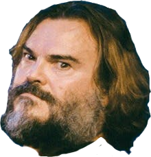
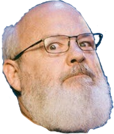

This is not the greatest webpage in the world
This is just a tribute
This is the greatest and best song in the world...tribute.
Long time ago, me and my brother Kyle here,
We was hitchhikin' down a long and lonesome road.
All of a sudden, there shined a shiny demon
In the middle of the road,
And he said,
Play the best song in the world
Or I'll eat your soul.
Well, me and Kyle, we looked at each other
And we each said, Okay
And we played the first thing that came to our heads, just so happened
to be
The best song in the world, it was the best song in the world.
Look into my eyes and it's easy to see
One and one make two, two and one make three.
It was destiny.
Once every hundred-thousand years or so,
When the sun doth shine and the moon doth glow
And the grass doth grow.
Needless to say, the beast was stunned.
A whip-crack went his whippy tail and the beast was done.
He asked us, Be you angels?
And we said, Nay, we are but men!
Rock!
This is not the greatest song in the world, no,
This is just a tribute.
Couldn't remember the greatest song in the world, no,
No, this is a tribute
To the greatest song in the world, alright!
It was the greatest song in the world, alright!
Yeah, it was the best motherfuckin' song,
The greatest song in the world!
And the peculiar thing is this, my friends,
The song we sang on that fateful night,
It didn't actually sound anything like this song.
This is just a tribute. You've gotta believe me.
And I wish you were there, just a matter of opinion.
Ah, fuck! Good God! Gotta love it!
So surprised to find you can't stop it!
A fiery ring of fire! Rich motherfucker!